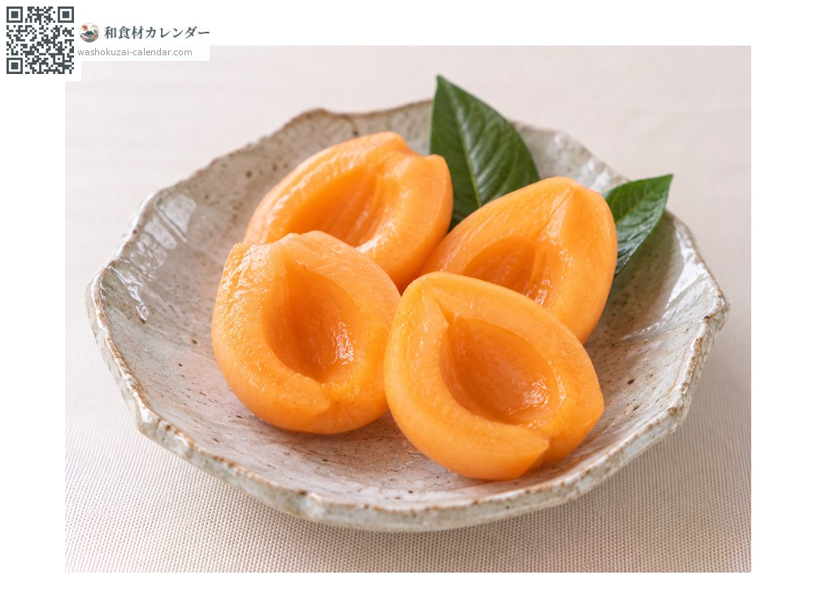
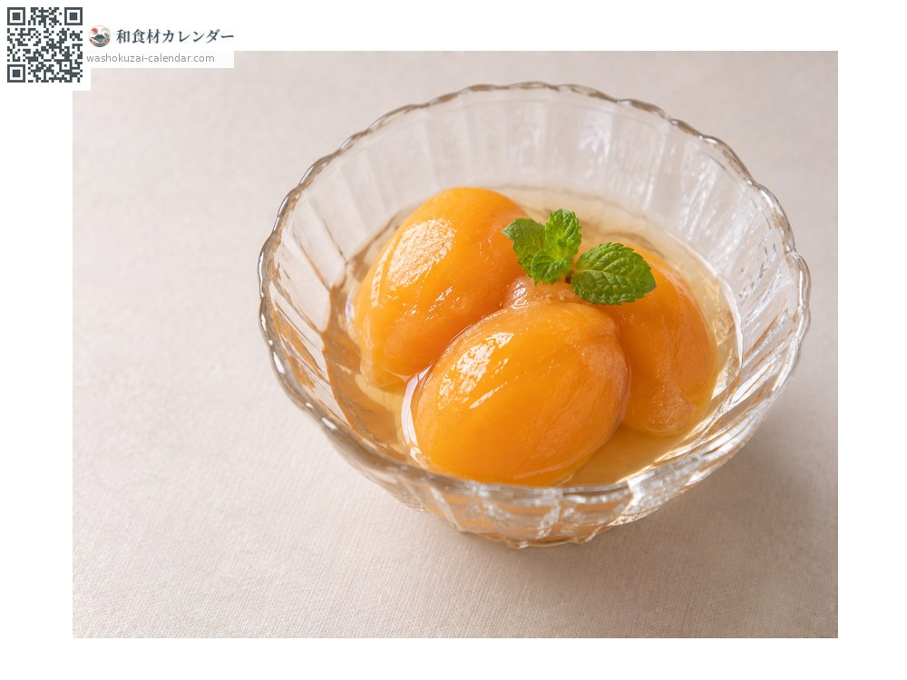
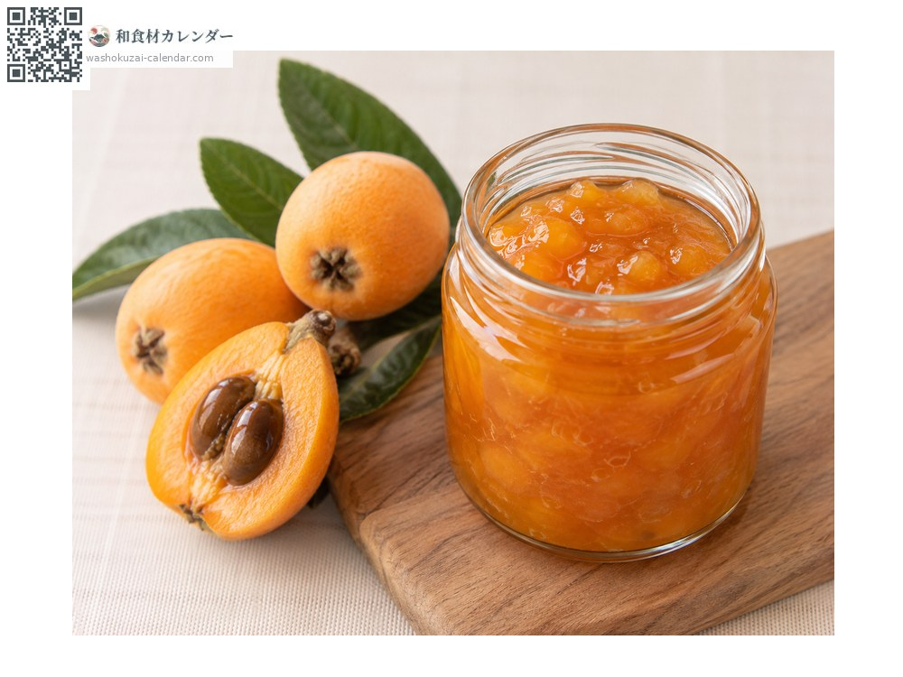
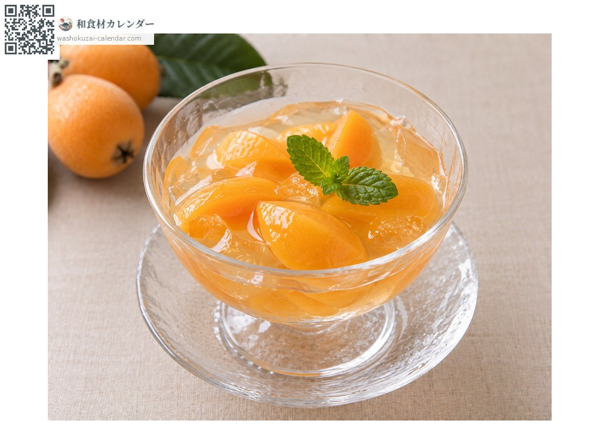

水果
枇杷
ビワ びわ biwa
别名biwa
应季时期为6月、7月

应季时期
1月
2月
3月
4月
5月
6月
7月
8月
9月
10月
11月
12月
应季有供应
烹饪方法

直接生食
削皮直接吃。

糖渍水果
以糖浆炖煮。

果酱
去籽后熬煮。

果冻
把果肉凝固成冻。
挑选方法
还带着绒毛、颜色是均匀的深橙色。蒂头结实。
保存方法
冷藏会让风味变差。常温保存，食用前稍微冰一下即可。
主要产地
小知识
容易损伤且不耐放。冷藏会让风味流失，因此以常温保存为原则。